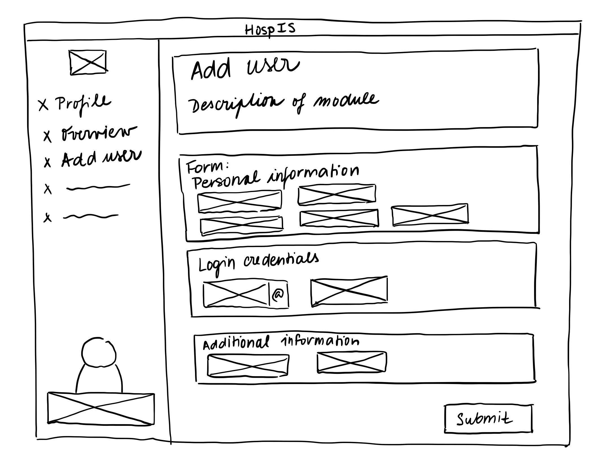
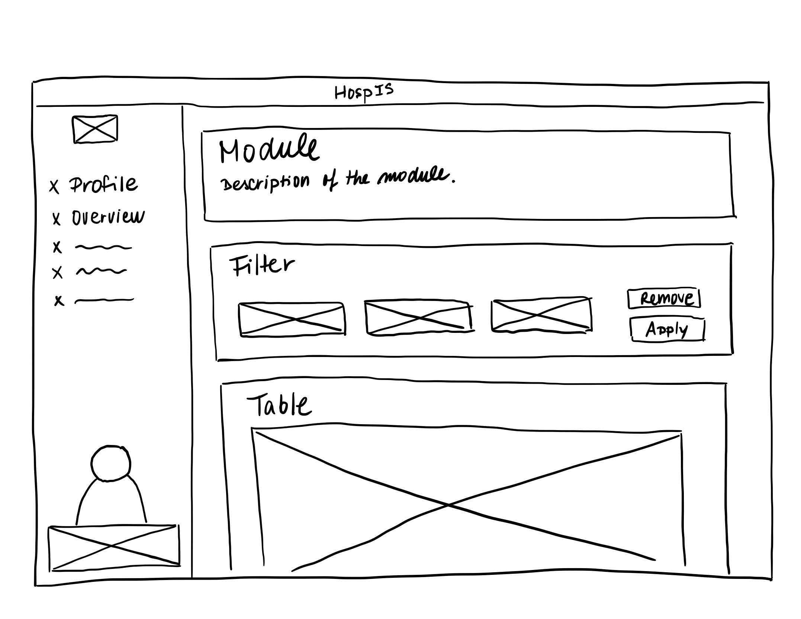
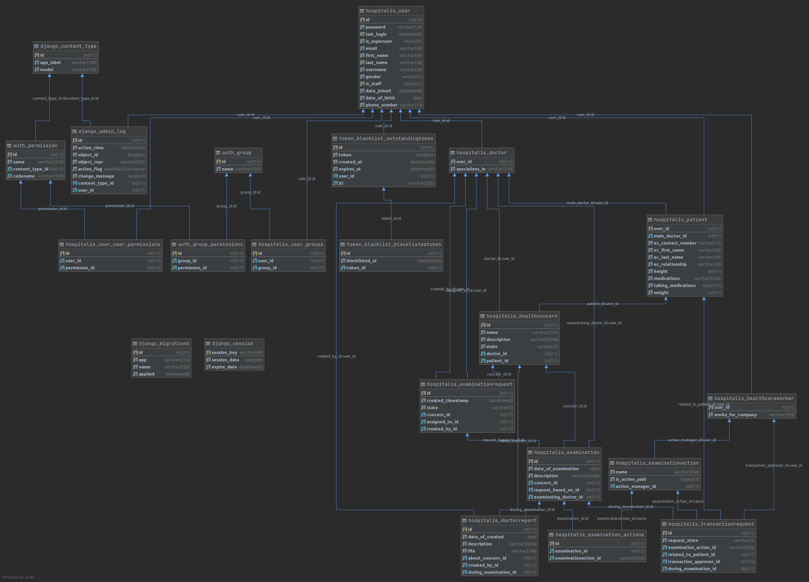

| Login | Password | Role |
|---|---|---|
| admin@fit.vutbr.cz | prestiz++ | Administrator |
| doctor@fit.vutbr.cz | doctor++ | Doctor |
| patient@fit.vutbr.cz | patient++ | Patient |
| insurance@fit.vutbr.cz | insurance++ | Insurance worker |
The creation of fronted was based on initially created wireframes, laying the guidelines for successful
implementation of user-friendly information system.
The main goal of the design was to create a simple and easy way to navigate the system. It was necessary to let
user
focus on their task, instead of getting lost in the interface while looking for desired functionalities.


The implementation of frontend was done in a progressive Javascript framework Vue.JS
for building user interfaces. A supporting components library Vuesax was used
as well.
Official Vue.JS router was used to route between system components in a
Single Page App manner. Routing is handled in frontend/src/router/router.js.
To communicate with our API, service for each logical unit was created. Querying of these endpoints can be found
in
frontend/src/services/.
To handle current user information as well as tokens for authentication, Vuesax
- centralized store for all the components was used. The source file can be found in frontend/src/store/.
The views model all the required use cases and they fulfil all the requirements. All views
are located in frontend/src/views/ and structured in folders according to user roles.
For each user role, several subfolders were created, each containing Vue files modelling a specific use case.
For
example module for creation of new patient is located in frontend/src/views/admin/newUserModules/.
Scheme of implemented relational database:

Every use case and feature required by the assignment has been implemented.
The implementation of the manipulation with assigned tickets was implemented contrary to the assignment. We do
not consider this an issue.
The assignment states that doctor who was assigned with ticket is not supposed to see the record of the entire
health concern. In our opinion, it is necessary to let him see all the previous measures and examinations
that were performed on behalf of the given medical problem. It is important for him to be able to compare the
previous and current treatment, in order to decide whether the provided treatments are sufficient.